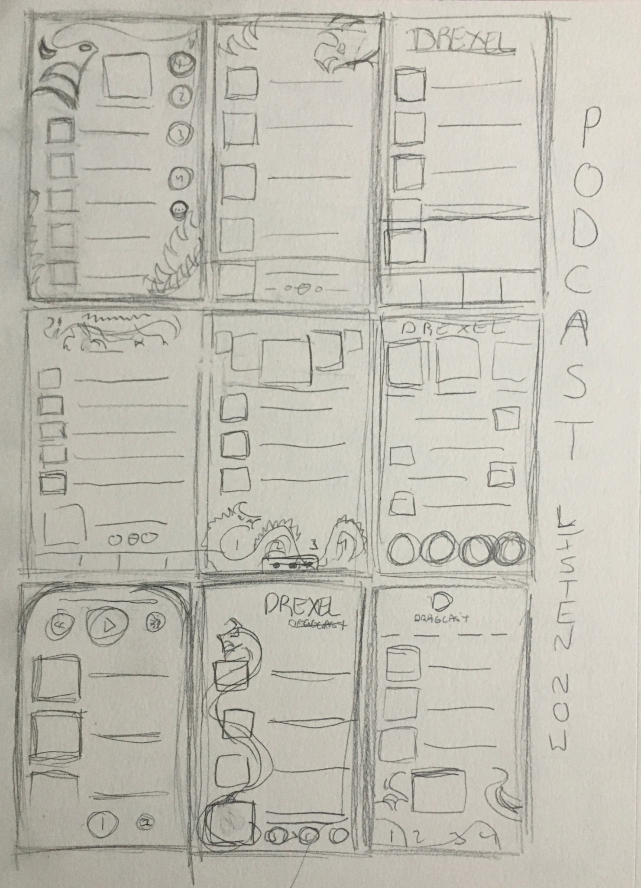
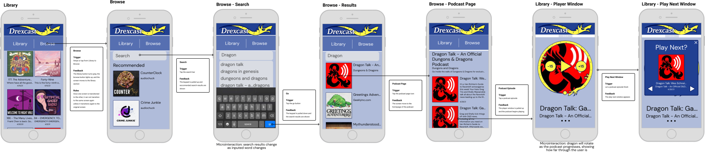
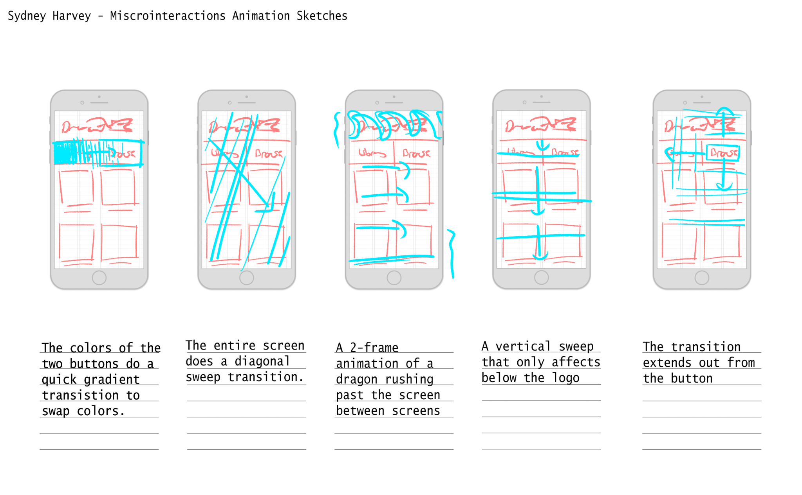

UX - UI - Design
The task of this assignment was to design, build, and animate all pages of a mobile app. I chose to create a podcast app designed for the students at Drexel University. I wanted to combine the visual iconography of Drexel and simple UI to create a both visually interesting and usable app that Drexel students could potentially use.
Wireframe drafts
App taskflow
App animation plan